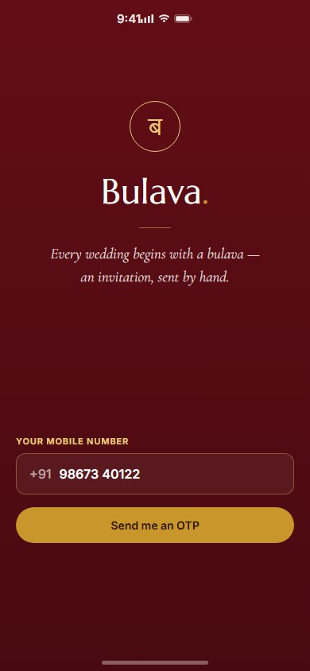
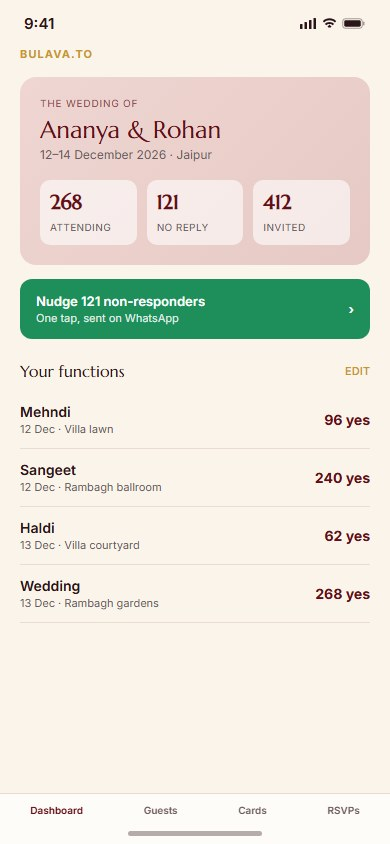
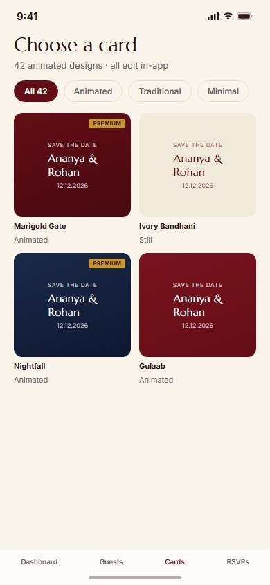
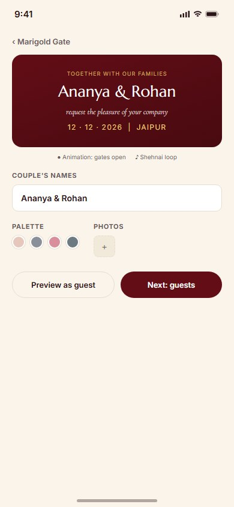
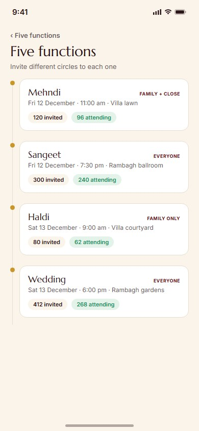
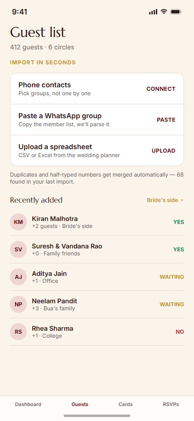
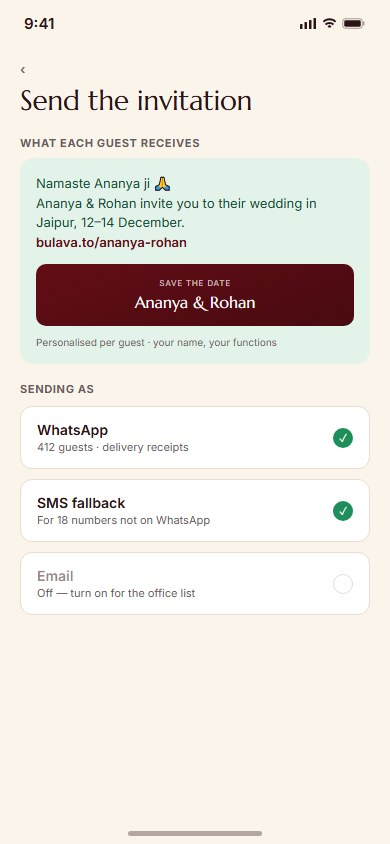
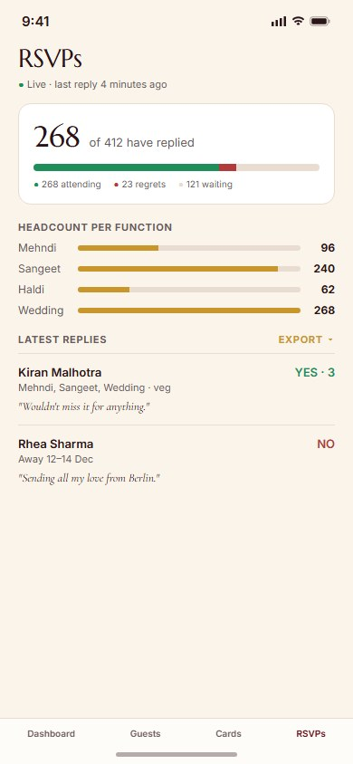
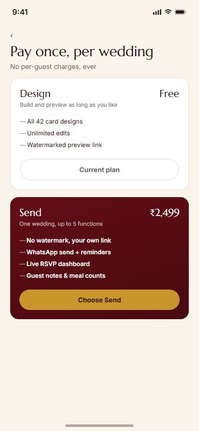
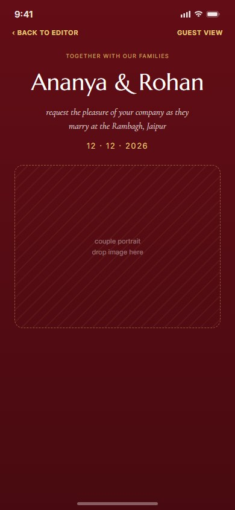

This extends the existing Bulava.to platform — the luxury digital wedding invitation site and admin portal already in this portfolio — into a native iOS app for the person actually planning the wedding: the host. Where the web platform is about building and sending one invitation, the app is about running the whole event: importing a guest list, tracking who's replied, and keeping every function (Mehndi, Sangeet, Haldi, Wedding, Reception) staffed with the right headcount.
Rebuilt on Bulava's own brand rather than a generic template — deep maroon (#630D16) with gold hairlines on an ivory paper ground, Marcellus for display type paired with Cormorant Garamond italics for the wedding-card moments, and WhatsApp green reserved strictly for send actions so it never gets confused with the brand's own palette.
Number-first sign-in. The promise is stated in three lines and nothing else competes with it.

Answers the only two questions a host actually has: who has replied, and who do I chase next. A one-tap WhatsApp nudge sits right below the headline numbers.

42 designs, filterable by style. Customising a card is a live preview above the controls — every edit lands on the card immediately, not in a separate step.


A vertical timeline rather than a flat list — each function (Mehndi, Sangeet, Haldi, Wedding, Reception) keeps its own circle of invited guests, since Indian weddings routinely invite different groups to different events.

Import is the top of this screen, not buried in a menu — it's the reason the app exists. Phone contacts, a pasted WhatsApp group, or a spreadsheet from the wedding planner all merge into one deduplicated list.

Shows the exact message before anything leaves — personalised per guest, with the actual card preview attached. WhatsApp is the primary channel with an SMS fallback for the handful of numbers not on it.

Live reply counts with a per-function headcount breakdown — this is what the caterer actually asks for, so it's on the first card rather than buried in a report.

Flat price per wedding, not per guest — the honest version of a pricing model that could easily have punished large Indian wedding guest counts instead.

What guests actually open when the invitation lands on WhatsApp — full-bleed maroon, gold hairlines, one clear RSVP action, no admin chrome in sight.
